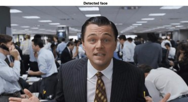

From the very beginning of life, humans try to express him/herself with ‘Masks’.[1] To surprise, to frighten, to pray, to cover... Like any other imperishable tradition, we use its modified version nowadays. Unlike when cinema discovered VFX in analog [2,3], the breakthrough and spread of digitalization have made interpretations doable-by-anyone, limitless and unpredictable. Moreover, ‘digital masks/filters’ became vouge of our virtual world and even affect in our attitudes in non-virtual areas. [4,5] In my work, I examined the reflection of this socio-cultural fact and trend on the computer age with some algorithms and case studies as image/video face swap and filtering applications which was made using Viola Jones Algorithm, KLT (Kanade–Lucas–Tomasi feature tracker) and MPB (Modified Poisson blending technique).
Figure 1. Le Voyage
Dans La Lune,
A Trip to The Moon (1902)
SOME FACE MANIPULATION METHODS
Face manipulation concept is so wide, in literature there are many different approaches to achieve this problem. In common, the blending process progresses with the mask which taken from source applies to target’s face. Unlike Face2Face (3D masks), in our concept ‘Face Swap’, we use 2-dimensional masks (projections). On the other hand, deepfake refers to more complex applications. In deepfake approaches, generally GAN or Autoencoder-like deep learning applications are used. [6,7,8]
BEHIND THE SCENES: ALGORITHMS & MATH BEHIND APPLICATIONS
In this section algorithms and some related application outputs will be discussed.
– VIOLA JONES ALGORITHM (FOR FACE AND FEATURE DETECTION)
Despite its introduction at the beginning of the millennium, Viola Jones Algorithm is still one of the most popular face detection algorithms. It classifies values of images based on the simple ‘features’ rather than pixels. The main reason to do that is feature-based system operates much faster than a pixel-based system. At this point Haar basis functions and Integral Image help us to detect face(s) and simple features, for this process we use three kinds of Haar-like features: [9,10]
Edge-like-features (two-rectangle-features) (6 memory lookups)
The value of a two-rectangle feature is the difference between the sum of the pixels within two rectangular regions. The regions have the same size and shape and are horizontally or vertically adjacent.
Line-like-features (three-rectangle-features) (8 memory lookups)
A three-rectangle feature computes the sum within two outside rectangles subtracted from the sum in a center rectangle
Four-rectangle-features / Diagonal-features (9 memory lookups)
Four-rectangle feature computes the difference between diagonal pairs of rectangles.
Edge-like 2 Rectangle = A-2B+C-D+2E-F
Line-like 3 Rectangle = A-B-2C+2D+2E-2F-G+H
Diagonal 4 Rectangle = A-2B+C-2D+4E-2F+H-2I+J
Figure 2. Feature Lookups
The process that makes this face recognition algorithm faster than others is Integral Image. It allows to compute related part of image much faster with less variables compared to pixel-to-pixel computation.
The integral image at location x, y contains the sum of the pixels above and to the left of x, y, inclusive:
where ii(x, y) is the integral image and i(x, y) is the original image. Using the following pair of recurrences:
(where s(x, y) is the cumulative row sum, s(x, −1) = 0, and ii(−1, y) = 0) the
integral image can be computed in one pass over the original image. [9]
Feature Discussion: It is obvious that these filters are not the solutions that give the best results for face detection and feature extraction. Especially for detailed analysis. Rectangle features are somewhat primitive when compared with alternatives such as steerable filters [11] Contrastingly, it could be said that horizontal, vertical, and diagonal lines are the most optimal solution to determine the borders and features of face. An example for feature detection with integral image shown below:
Figure 3. On the left, desired part of original image is sum of 9-pixel values. On the right-hand-side, the same desired area calculated with only 4 variables.
For our case, MATLAB offers different kind of solutions.
Related images’ pixel values can be transferred into matrix and the
calculation that mentioned above apply to the matrix.
MATLAB built-in functions allows us to do reach solution 1 with less line of code. [12]
I = imread('pout.tif'); imshow(I)
J = integralImage(I);
d = drawrectangle;
Figure 4. ‘pout.tif’
r = floor(d.Vertices(:,2)) + 1; c = floor(d.Vertices(:,1)) + 1;
regionSum = J(r(1),c(1)) - J(r(2),c(2)) ...
Figure 5. Area where calculations made
+ J(r(3),c(3)) - J(r(4),c(4))
regionSum = 1129512
The most proper and fastest solution for this particular case is vision.CascadeObjectDetector(). This 1 line of code not just provides the integral image, it nearly includes all the methods discussed above and will be discuss below. (Haar-basis functions, cascading etc.) [13]
Adaptive Boosting (AdaBoost) Algorithm
The process which combines several weak learners (for our case, weak learner refers to each facial organs: nose, left eye, mouth, etc.) into a strong learner called boosting. (This process could be considered as complementary of Cascading) Key point here is training period lasts sequentially. Which means the purpose of every single step is to correct its predecessor feature. One of the major concerns of Adaptive Boosting is under-fitting situation. In this instance, model does not fit the training data, so the basic relationship between inputs and outputs cannot be learned. The error rate is high in both the training and test set. These models miss trends in the data and cannot generalize. To avoid this problem, first base classifiers (ex. Decision Tree, Support Vector Machines...) often used. Since the AdaBoost Algorithm is generally used for binary classification, its main duty is to improve calculation of the distinction between faces and non-faces. (To achieve this aim like in ‘Decision Tree’, it uses weights(w) between sequences, branches and tries to find the minimal error rates) As mentioned above AdaBoost should not be treated as ‘face’ detector. (It improves the results) We can call the concept that detects the face ‘Cascading’. Finally, a new predictor is trained using the updated weights, and the whole process is repeated until the desired number of predictors is reached which is specified by the user. [14]
, ,,
Figure 6. AdaBoost Algorithm Calculations (Briefly)
After we found the rough position of face, cascade filter (it could be considered as binary classifier) searches a particular niche feature (an eye, ear, mouth, etc.) During search, if it detects a particular feature (ex. Right eye) it continues to search another feature. (ex. nose) If it gets always positive responses (finds desired features): finally, it returns the ‘ROI’ (Region of Interest) of face with locations of features. If it cannot find desired feature: it stops the process (Reduces the amount of computation time spent on false, windows) retries the process on different area of image.
Figure 7. Cascade Classifier
There are some results of my study shared below. It takes an average of 0.1 seconds for the machine to detect that there is no head in the frame. Depending on the number of heads in the image, the finding time varies between 0.164459 and 1.207437 seconds. These results confirm that when non-face area (false positives) in image decreases, machine detection rate increases. Since the machine was running unsupervised (we show that what head is look like and what is not to the machine yet, it was not possible to show every condition that is non-head) therefore it was not possible to create a proper confusion matrix, so the situation is explained with the following case examples. If we examine the performances and failures of the model:
Dataset For Feature Training
At the very beginning of coding, I try to evaluate feature training stage with external dataset. In my trials, I tried to use ‘MS Celeb 1M’ [15] dataset which contains 8,456,240 images yet due to some restrictions of operating system and graphics card (MacOSX – M1 GPU)* the process could not be completed with desired conditions. Therefore, I used ‘Transfer Learning’ concept for feature detection phase, from OpenCV libraries, I transfer ‘haarcascade_frontalface_alt.xml’ file that includes feature detection information about frontal face. [16,17] Here machine evaluates that information with using Haar-like Features and cascading. (these principals discussed above.) In addition to this, I also use built in MATLAB Haar-Cascade module called ‘FrontalFaceCART’.
Accuracy of model:
During trials, machine found 175 out of 197 potential heads, and 9 non-heads were classified as head. (Since we work with single-head models for face swapping applications, the margin of error for multi-head models is negligible.)
Accuracy = 0.8495145631 ≈ 84.95%
Average finding time:
0.164459 (for 1 face)
= 0.164459 sec / face
0.423240 (for 29 face, it also classifies 6 non-head situations as face)
= 0.014594 sec / face
1.207437 (for 133 face, machine also couldn’t find 2 of faces)
= 0.009078 sec / face
...
Elapsed time is 0.109801 seconds. Elapsed time is 0.087844 seconds. Elapsed time is 0.198364 seconds. ' No face detected : ( '
Elapsed time is 0.423240 seconds. Elapsed time is 1.207437 seconds. Elapsed time is 0.164459 seconds. ' Face detected : ) '
...
Figure 8.
Elapsed time is 1.207437 seconds.
133 Face(s) Detected :)
Machine could not distinguish faces in photos taken from side profile. The training dataset may be lack of or includes not enough number of photos which taken from side-profiles.
case 0
colist{ii} = ['red']; case 1
colist{ii} = ['green']; case 2
colist{ii} = ['cyan']; case 3
colist{ii} = ['magenta']; case 4
colist{ii} = ['blue']; otherwise
colist{ii} = ['black'];
On the left is a block of face detection code. This simple iteration is not added just for visual concerns. The conclusion we will draw by following these colors is this: the machine does not follow the rows and columns sequentially (at least as I predicted at the beginning).
Figure 9. Сталкер(Stalker),1979. Elapsed time is 0.229140 seconds.
1 Face(s) Detected :)
Machine could not distinguish face in photo in ‘sepia’ format with low lighting. One of the possibilities behind that failure might be the default ‘threshold’ value. In the work below, we can observe how threshold effects the result:
OrganDetect_a = vision.CascadeObjectDetector('Nose', 'MergeThreshold', 2 ) OrganDetect_b = vision.CascadeObjectDetector('Nose', 'MergeThreshold', 12) OrganDetect_c = vision.CascadeObjectDetector('Nose', 'MergeThreshold', 22)

Figure 10.
(a) Threshold:2, (b) Threshold:12,
(c) Threshold:22,
(Face model: Alejandro Jodorovsky)
Figure 11.
Elapsed time is 0.80642 seconds.
35 Face(s) Detected :)
Machine detected 6 non-face as face.

Figure 12. The Wolf of Wall Street, 2013
This study was performed only under experimental concerns. This example was given to the machine before the face features was described, and as expected, the machine failed. In crowded environments, the detect rate has been improved as shared in the examples above.
Figure 13. The Office, 2005
In this example, face detected successfully yet, not enough features found.
Especially, mouth could not detected.
Figure 14. Truman Show, 1998
Here machine detect all features, but it cannot find enough arguments for nose and eyes. It also accepts turtleneck sweater as face feature.
Figure 15.
This example can be considered as successful trial. Face and features detected as expected and we observe enough arguments for each feature.
NOTE: Machine gives much better results in people who do not have or have less hair.
Figure 16. The Smurfs, 1981.
Additionally, machine classified Papa Smurf as non-face.
Before face swap applications, a basic application tried with these feature locations. After bunch of trial-error period, simple glasses filter added to target face. The promising result here is alpha composition (see MBP part) of source (glasses transparency) is preserved. (In other words, we still can see targets’ eyes)
Figure 17. Simple eyeglasses application example.
II.II KANADE–LUCAS–TOMASI FEATURE TRACKER
KLT Algorithm is capable of track objects with many methods, varieties, different motions: [18]
Tracking deals with estimating the trajectory
of an object in the image plane as it moves around a scene.
Object tracking (car, airplane, person)
Feature (Harris corners) Tracking
Single object tracking
Multiple Object tracking
Tracking in fixed camera
Tracking in moving camera
Tracking in multiple cameras
Translation
Euclidean
Similarity
Affine
Projective
Each of them needs different calculations to reach most accurate solution. From the first release of KLT Algorithm (1981), it changed and expanded majorly 2 times (1984 and 1991):
Lucas-Kanade (1981): An Iterative Image Registration Technique with an Application to Stereo Vision.[19]
Kanade-Tomasi (1991): Detection and Tracking of Feature Points.[20]
Tomasi-Shi (1994): Good Features to Track.[21]
The overall idea of the algorithm answers and creates two key questions/dilemmas:
Q1. How should we track them from frame to frame?
A1. Method for aligning (tracking) an image patch (1981)
Q2. How should we select features?
A2. Method for choosing the best feature (image patch) for tracking. (1991)
For our case, we have to detect and track face parts carefully and as fast as we could. At this point, what we need is to detect ‘good features’ which can be tracked easier and more precisely compared to the other features. Like Haar- basis-edge-like detection, first we need a region that contains only the related part of tracked face. Therefore, initially we generate a ROI (Region of interest) from photo and ROI can also be considered as a roadmap of our process. (It includes eyes’, nose’s, mouth’s, chin’s, foreheads, and eyebrows’ location which are our good features to track.) After that, variety of calculations show themselves up. Some of basic calculations given in below:
Figure 18. Person of Interest, 2011
Yellow square represents Region of Interest (ROI).
Figure 19. Movement Situations source: S. Cheng, 2018
Figure 20. Basis of Tracking Equations source: S. Cheng, 2018
From now on, we have two options for tracking:
Calculate every good feature movement (Enormous computational cost for large/long videos)
Calculate Harris corners’ movement (Less accurate but very effective compared to the previous option.)
Harris Corner Detection allows us to detect corners in image. [That corner information (locations) is so useful for tracking and alignment phases] Harris detector evaluates eigenvalues to find the 'ROI'. The process simply explained with figures below: [22]
Figure 21. Edge searching process.

Figure 22. Steps of tracking process
Figure 23. Corner Responses
Figure 24. Typical Harris corner detector response on the face
The main difference between Harris detector-based feature tracking and ours (KLT Shi-Thomasi, 1994) is that our version uses just edges as good-features to track face. It obviously increases the error ratio but also speed up process significantly. Since we use these features in video processing, keeping the number of edges optimal will be much more efficient for the video editing process.
In MATLAB side, these main calculations done with three key functions:
points = detectMinEigenFeatures(rgb2gray(videoFrame), 'ROI', bbox);
This line finds the Harris corners from eigenvalues and uses ‘boundarybox’ (area
separated from the rest of the image) for tracking. [23]
pointTracker = vision.PointTracker('MaxBidirectionalError', 2);
Afterwards, we follow the detected points with the mathematical operations mentioned above. [24]
[xform, oldInliers, visiblePoints] = estimateGeometricTransform(... oldInliers, visiblePoints, 'similarity', 'MaxDistance', 4);
‘estimateGeometricTransform’ function estimates the most suitable equations for tracking points with the help of equations in Figure 20.
As the method used instead of this function in the first trials could not modify/predict the linear or polynomial equation obtained from the follow-up in the first two frames, the results were not as desired.

0
1
9
21
17
13
Figure 25.
It observed that (without using estimateGeometricTransform) after evaluation of 1st and 2nd frame, machine estimates a movement and uses it for each different frame without update. That causes a failure which can be seen from frame 9 to 21.
II.III. IMAGE PREPROCESSING (IMAGE ALIGNMENT & STABILIZATION)
Image alignment is the procedure of the overlay of the images of same scene under various conditions, such as from various viewpoints, with different illumination, using a variety of the sensors, or at various times. Image alignment is transforming a source image to the coordinate system of the reference image besides image stabilization helps us to fix issues caused by blur (problems occur during exposure because of camera motion). [25]
In these applications below, it showed that what happens if we do not use image alignment/stabilization.
Figure 26.a. The Office, 2005.
Machine could not align target’s eyebrow perfectly but
in our case, it is a satisfied result.
Figure 26.b. Evan Almighty, 2007.
Completely unsuccessful example, except for the right eye
MODIFIED POISSON BLENDING TECNIQUE (MPB)
The most relevant part of this work with image/video editing is definitely the MPB phase. Masking application which mentioned at the very beginning of the introduction takes its final shape with this technique. Although the verbal description is simple, computation behind is not. Because of that, MPB explanation covered under 3 sub-questions:
WHY ‘MODIFIED’?
Figure 27. Sample output of blending using the classical technique of Poisson blending.
There are mainly five types of pseudo errors: rotation, translation, scaling, distortion, and color, at the time of training to emulate the different errors we face during inference. We remove rotation, applying a heuristic blending technique like Poisson Blending on the heuristically aligned frames, the blending approach fails to produce convincing/photo-realistic results. The neural blending approach learns a non-linear transformation and blending strategy on the given input that cannot be emulated with a heuristic blending approach like Poisson Blending. Poisson blending performs blending really well when the source and the target faces are well aligned and fails to generalize to cases where there’s a difference between the source and the target faces and learning an affine transformation no longer suffices.** [26]
WHAT IS ‘POISSON’ DISTRIBUTION?
The Poisson distribution is a discrete probability distribution in probability theory and statistics and expresses the probability of the number of occurrences in a certain fixed time unit interval. [27] In our case, Poisson used for smooth out border-color-gradations on the target and source images at the edges/boundary pixels. This stage is important because if miscalculation occurs while computing image, render results might have serious bleeding problems. We also made use of the Laplace filter in our app to minimize errors which explained in next section. Examples that shows how Poisson Blending applied to the images shown in section III.ii.
Figure 28. Bleeding problems in Poisson image editing arise because of the dependency on the boundary pixels in the target image.
HOW ‘BLENDING’ WORKS?
Gradient images and the Laplace filter in the blending phase allow the process to be both quick and consistent. The gradient of an image measures how it is changing. It provides two pieces of information. The magnitude of the gradient tells us how quickly the image is changing, while the direction of the gradient tells us the direction in which the image is changing most rapidly.
Because the gradient has a direction and a magnitude, it is natural to encode this information in a vector. The length of this vector provides the magnitude of the gradient, while its direction gives the gradient direction. Because the gradient may be different at every location, we represent it with a different vector at every image location. [28]
Figure 29. (a) Intensity image of a cat. (b) a gradient image in the x direction measuring horizontal change in intensity. (c) a gradient image in the y direction measuring vertical change in intensity. ***
A Laplacian filter is an edge detector used to compute the second derivatives of an image, measuring the rate at which the first derivatives change. This determines if a change in adjacent pixel values is from an edge or continuous progression.
Laplacian filter kernels usually contain negative values in a cross pattern, centered within the array. The corners are either zero or positive values. The center value can be either negative or positive. It should be remark that there is a disadvantage of Laplace filtering: First derivative operators exaggerate the effects of noise. Second derivatives will exaggerate noise twice as much. [29]
Figure 30.
3x3 kernel for a Laplacian filter which is used in our study.
Figure 31. Laplacian mask example.
IMAGE & VIDEO FACE SWAP APPLICATIONS IN MATLAB:
This study includes 3 different main applications. i and ii used as root function for iii. ****
REAL-TIME FACE DETECTION AND TRACKING:
Here I create an environment with MATLAB built-in functions and transfer learning concept. (Instead of training, I used existed data that includes needed information) In a given period, machine constantly takes pictures, converts into grayscale, evaluates the face and feature locations and projects to user.
POISSON IMAGE EDITING (FACE&OBJECT SWAP / IMAGE)
Poisson Image Editing (which includes Poisson distribution, Laplace filtering stages) was the second application. Here user crops (creates a mask) the related part of image. (It is not have to be face) The main problem here was scaling issues. I solved that issue with ‘imresize’ command but still for further implementations to get proper solutions, program needs much efficient way to automate the aligning process.
Attempt 1
Figure 32. From left: (a) source, (b) target, (c) mask, (d) mask placed in ROI by user (e) output (imresize function and intermediate steps
effects the dimensions & resolutions of output)
Attempt 2
Figure 33. (a) target, (b) source, (c) extracted source,
(d) copy-paste, (e) output source (source): depositphotos.com
source (target): nytimes.com (NOTE: Rendering lasted 18 mins.)
VIDEO FACE SWAP APPLICATION
The main purpose of this project is what we did in the iiird application. The combination of ist and iind became an automated video face swap technique here. Steps described in below:
Dataset
Dataset Information
Num. of Source: 3 (98, 201, 81 frames)
Num. of Target: 4 (98, 201, 81, 98* frames)
*Added later to original dataset.
There are 3 source and target frame sets exist in original dataset. In all samples which are stabilized and aligned, target donors face the lens at a 90- degree angle. We observe that oscillation and zoom in-out are done without disturbing the angle between their faces and the lens (without turning their heads). As target donor, many trials made with various videos, yet results were unexpected. Attempts with wrong results showed at the end of this part.
Unlike image editing, variables change constantly in video editing. (Face/feature location, lighting, rotation, etc.) Before the editing process, we know from previous works that aligning and stabilization has critical importance for face swap application. Therefore, both target and source images need preprocessing. The very first step is converting videos to frames. A simple ffmpeg terminal command used for converting. * Later, thanks for M. Afifi’s stabilization tool, 4th target’s stabilized video (where I am the target donor) obtained about in 5 mins.
* ffmpeg -t 10 -i ../Movies/sample.mov ../DeepfakeMATLAB/frames/%05d.jpg
Face & Feature Detection
Steps used in application i imported here. First, image converted to grayscale for faster detection. Additionally, for more advanced feature extraction, haarcascade_frontalface_alt.xml file from OpenCV is used as transfer learning method.
faceDetector = vision.CascadeObjectDetector('haarcascade_frontalface_alt.xml')
Blending
MPB function which developed from application ii, blends target and source with using Poisson distribution and Laplace filters as these equations at part
II.iv.c. indicated. After computation, function saves blended frame to output folder. Unlike application ii, here since we work with aligned and stabilized dataset, we do not need to rearrange target or source frame. When KLT is added here, the blending process will be applied to the 'ROI' in a fully automatic manner during the process.
Tracking the Face using KLT
Again, like in real-time tracking, machine creates edge points with using eigenvalues and calculates the new head position based on the previous frame. The functions below already explained in section II.II.
points = detectMinEigenFeatures(rgb2gray(videoFrame), 'ROI', bbox); pointTracker = vision.PointTracker('MaxBidirectionalError', 2);
In addition to application i, here we used estimateGeometricTransform function which calculates the translation, rotation, and scale of the tracked face between frames. The results are used to characterize the motion of the face.
[xform, oldInliers, visiblePoints] = estimateGeometricTransform(... oldInliers, visiblePoints, 'similarity', 'MaxDistance', 4);
[boxEdge(1:2:end), boxEdge(2:2:end)] ...
= transformPointsForward(xform, boxEdge(1:2:end), boxEdge(2:2:end));
During operations, masks and the target frame are constantly refreshed until it reaches the target number of frames. The process can be observed with the simple user interface that pops-up when the code executed.
Figure 34.
A frame from video face swap application. (Target donor: Author.)
HIGH-RESOLUTION NEURAL FACE SWAPPING FOR VISUAL EFFECTS
Unlike our mid-resolution examples, in 2020, Disney released an Autoencoder & GAN-based method that allows neural face swap for high-resolution videos. * Outputs are quite different. It can be seen on first sight that Disney’s outputs have unique look which seems familiar us from Disney’s movie world.[7]
Figure 35. Comparison of face swapping with Disney’s compositing and Poisson methods. From left: (a)target, (b)network output, (c)Poisson blending, (d)Disney’s.
*Let's note that, for a single relatively high-resolution image in our III.ii. Attempt 2, the process took 18 minutes.
SYNTHETIC FILM DUBBING
Nowadays, in the age of video consumption, many people prefer to watch dubbed content rather than subtitles. Companies like 'Flawless AI', which thinks that following the subtitles disconnects the viewer from the story, aims to overcome this situation by making lip sync based visual translation.
Figure 36. Example of synthetic dubbing.
DEEPFAKE ANCHOR
Channel owners are looking for low-budget solutions these days when costs are increasing. 'Deepfake anchors' seems to be the new trend for news channels in the field of video processing, where artificial intelligence is in demand. The process, on the other hand, is similar to the stages mentioned in our study, but the masking process is more detailed and audio processing is also included in the process.
The vast majority of deepfake applications are used for entertainment (as individual and as industrial) and education, but in some cases, we see this application used maliciously. In the video published recently, the 'fake' president who called for his army to 'surrender' during the Russia-Ukraine war, and Obama, who was also one of the bureaucratic donors, 'saying unspeakable words' are examples of these. For such applications of rapidly developing artificial intelligence, states should keep sanctions tight. Also, some recent applications like FaceApp, ZAO, Reface, etc. violates personal data protection law yet due to delay of international laws, solving such situations requires a long time. (Privacy protocols are now regulated in the mentioned applications.)